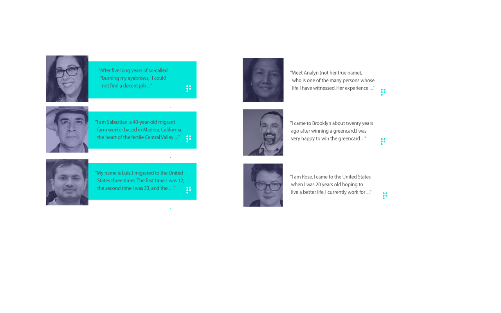

HOME
Often times hearing other peoples stories
brings a feeling of hope. These individuals
experienced what you did. These stories will
provide you with unique experiences. Some may be
catered to your situation more then others.
You can connect to the given individuals and
create a community thats right
for you.
STORIES
SYMPTOMS
HELP CENTERS

THEY ARE HERE
TO HELP YOU
FIND A COMMUNITY,
CONNECT,COMMUNICATE.